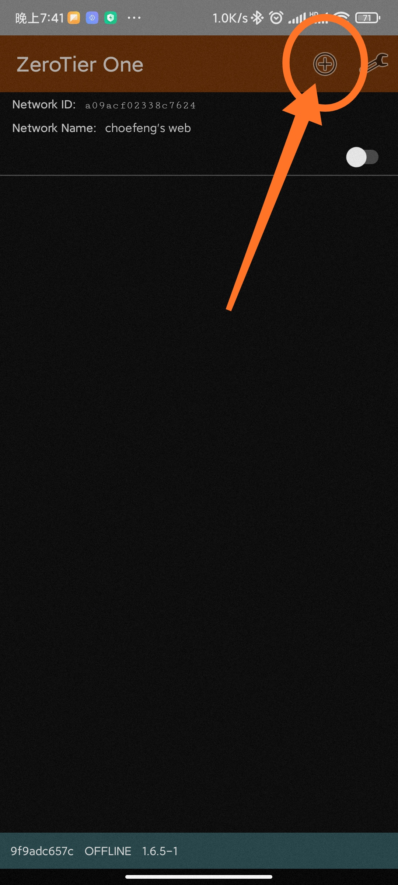
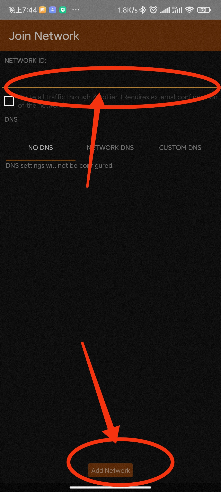
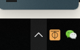
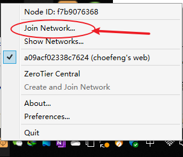
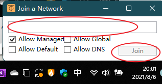

简介
为了降低使用成本，及信息化安全，特别使用局域网式服务器。有如下优点：
1、免审查，越过传统服务器提供商，实现想存就存。
2、高安全，这里不光指数据安全，通过局域网，让别人无处可进。
3、低成本，采用家庭宽带，超低的成本让你欲罢不能。
4、好管理，完全的本地化体验，打破互联网的窗户纸。
使用方法 - 手机端
1、下载局域网链接软件，点击下载。
2、安装后打开，选择顶部的“+”号。

3、在NETWORK ID一栏中输入，并点击Add Network完成添加。

4、你已经搭建完成了，可以在星空的局域网内畅通无阻了，点击返回首页。
使用方法 - PC端
1、下载局域网链接软件，点击下载。
2、安装后打开，在开始菜单中打开它（ZeroTier One）。他会藏在托盘里哦~

3、对着图标鼠标右键，选择Join Network...一栏。

4、在第一个长栏中输入，并点击Join按钮完成添加。

5、你已经搭建完成了，可以在星空的局域网内畅通无阻了，点击返回首页。